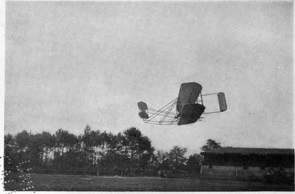

The Wright Biplane
Description
This section is from the book "The New Art Of Flying", by Waldemar Kaempffert. Also available from Amazon: The New Art of Flying.
The Wright Biplane
The two supporting surfaces of the Wright machine consist of canvas stretched over and under ribs of spruce. At a point near the centre these surfaces are three inches thick. The dimensions of the planes vary. In the earlier machines they measured 41 feet in spread, 6.56 feet in depth, and 538 square feet in area. In the later machines the spread has been reduced to 39 feet, the depth to 5.5 feet, and the area to 410 square feet. A smaller model has also been designed in which the spread has been reduced to 26 feet.
In the first Wright machines (Fig. 79) the horizontal or elevation rudder was mounted in front, and was so constructed that it was automatically curved concavely on the under side when elevated, and in the opposite way when depressed. A long wooden rod connected the horizontal rudder with a lever, which was manipulated by the operator's left hand (Fig. 20). By pulling the lever toward him the operator inclined the rudder upward; by pushing the lever away from him the operator depressed the rudder.
Fig. 79. The Wright biplane that Wilbur Wright flew in France in 1908.
Photograph by Edwin Levick.
The vertical rudder, which not only served to steer the machine in a horizontal plane but also to prevent it from spinning on a vertical axis, was mounted in the rear of the machine as at present. It consisted and still consists of two parallel vertical surfaces, swung by a lever in the operator's right hand. By pushing the lever away from him the operator turns the machine to the left; by pulling it toward him he turns the machine to the right.
Side-to-side balance has always been maintained in the Wright biplane by warping the main planes in the manner explained in Chapter V. The entire front of the two supporting surfaces is rigid; but the rear corners are movable. The central sections of the two planes are rigid and are never moved in balancing the machine. Only the rear corners of both planes play any part in controlling the apparatus. These flexible rear corners of both planes are connected by means of cables with the lever in the operator's right hand (Fig. 20), in other words, the lever which controls the vertical rudder. By throwing the lever from side to side the rear corners are flexed in opposite directions; in other words, as one corner of one plane is bent down, the other corner of the same plane is bent up, with the result that the entire plane is given what the Wrights call a " helicoidal warp." The same lever controls both the vertical rudder and the warping of the planes, because the Wrights found that as the planes were bent the machine would spin on a vertical axis, as explained in Chapter V. This lever is therefore swung in a circular or elliptical path so that the planes are warped and the vertical rudder swung in the proper direction at the same time.
In the newer Wright biplanes a modified form of lever has been adopted to warp the wings and turn the vertical rudder, the principle, however, remaining substantially the same. The new lever is provided with an auxiliary grip, which can be worked by the fingers to operate the vertical rudder, while the main portion of the lever is pushed forward or backward to warp the wings.
In the European Wright machine a tail was soon added, because it was found that the machine pitched markedly in flight. This pitching was corrected, to be sure, by manipulation of the horizontal rudder, but this required considerable skill on the pilot's part. Hence a horizontal surface was placed in the rear to act as a steadying tail, which surface could be turned up and down to aid the elevation rudder in its action. In the American machines, made by the Wrights themselves, this horizontal tail has also been incorporated (Fig. 80). What is more, the front horizontal rudders have been abandoned altogether and the rear horizontal surface or tail employed both as an elevator and a steadying surface. The result has been that the machine flies far more steadily than formerly.
Fig. 80. The Wright biplane of 1910. The elevating rudder has been placed in the rear of the machine, where it also serves as a tail.
Photograph by Edwin Levick.
The earlier Wright machines were mounted on skids. The machines were launched on a starting rail (Fig. 12) in the manner described in Chapter IV. The European manufacturers of Wright machines soon introduced wheels on which the machine ran in the usual manner, the skids serving for alighting as before. This improvement has been adopted by the Wrights (Fig. 14).
The motors which drive the American Wright machines are made by the Wrights themselves. The horse-power, except in small racers, varies from 25 to 30, which is considerably below that of most European biplanes. The motor drives two propellers revolving in opposite directions at the rate of 400 revolutions a minute, which is remarkably slow as propeller speeds go.
The Wright racing aeroplane, which made its first appearance at the Belmont Parl International Aviation Meet of 1910, is not essentially different from the regular Wright biplane. In order to attain high speed, the planes have been reduced in spread, and consequently in area, and a V-motor of high power has been installed. The planes are 21 feet in length and 3 1/2 feet wide. The combined area of both planes is 180 square feet. It is stated that the motor develops about 60 horse-power. The machine was used by Johnstone when he made an altitude flight of 9,714 feet. The machine is credited with a speed of 68 1/2 miles an hour.
Continue to: